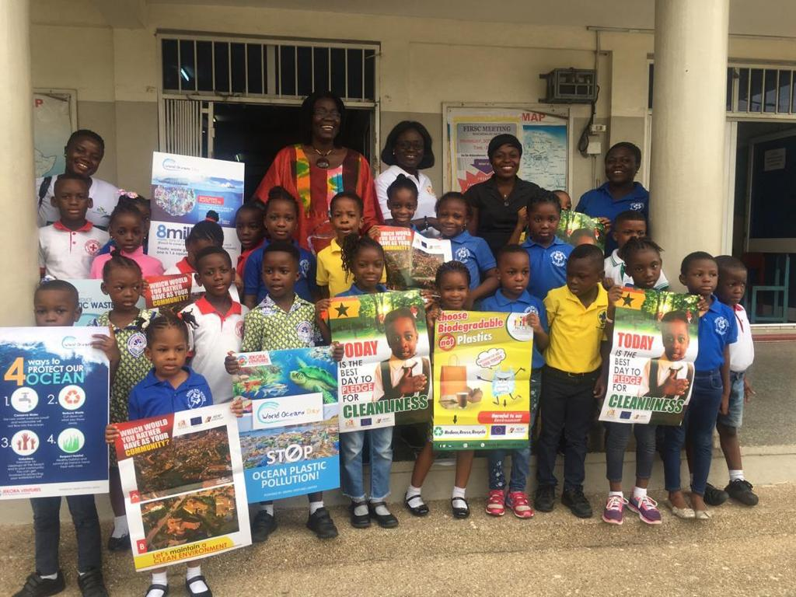
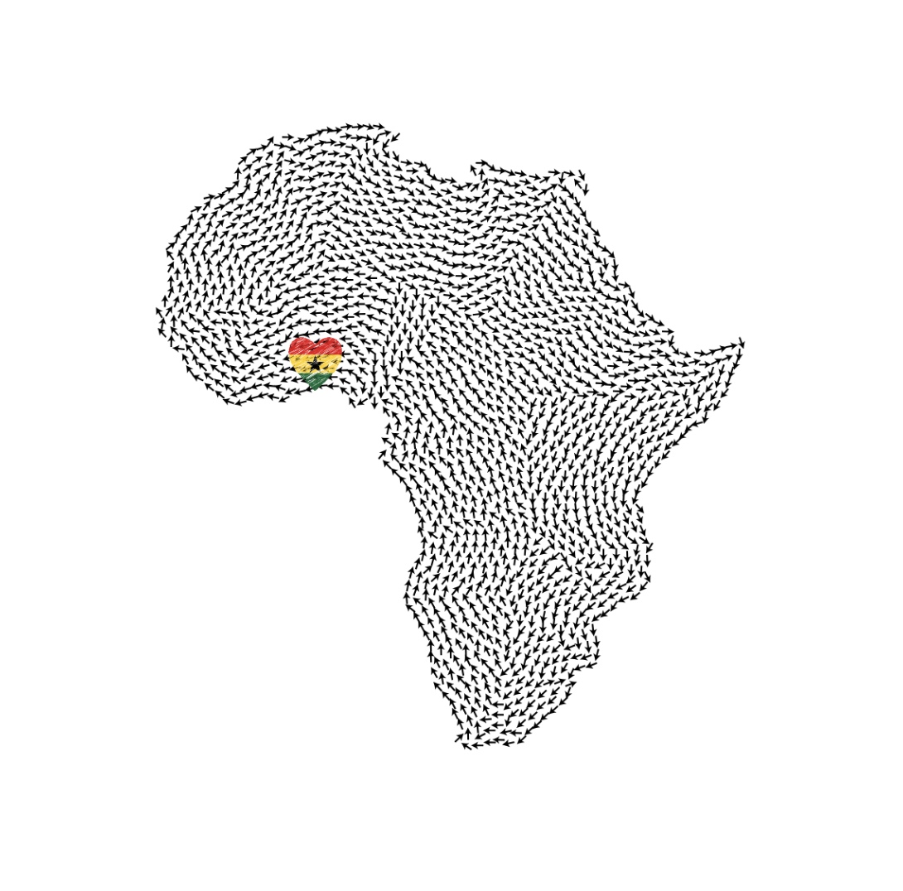
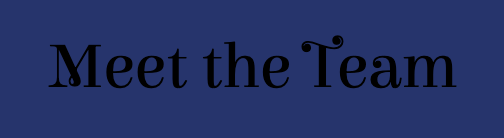

The Duala Foundation
“Be the Reason Someone Believes in the Goodness of Humanity!”
- Karen Salmansohn
Welcome to The Duala Foundation Communities thrive when individuals believe in their potential and use their knowledge to solve local problems. This website exists to inspire, educate, and empower people—especially youth—in small communities to make a difference using what they already have. Named after Kwame Adjoku Otchere (Duala), The Duala Foundation has been organized to continue Kwame’s vision for a better world. Kwame was one of those rare humans who threw themselves into projects with careless abandon, with an essential kindness that benefitted both the people he cared about and those he barely knew. Kwame loved people – friends and strangers alike – and his unspoken aim was to help anyone anywhere anytime out of the goodness of his big heart!


